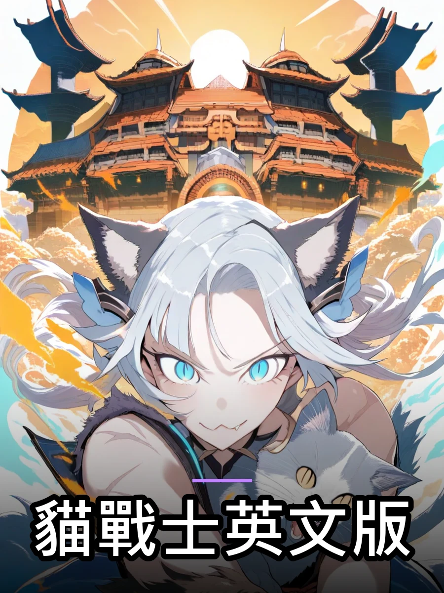
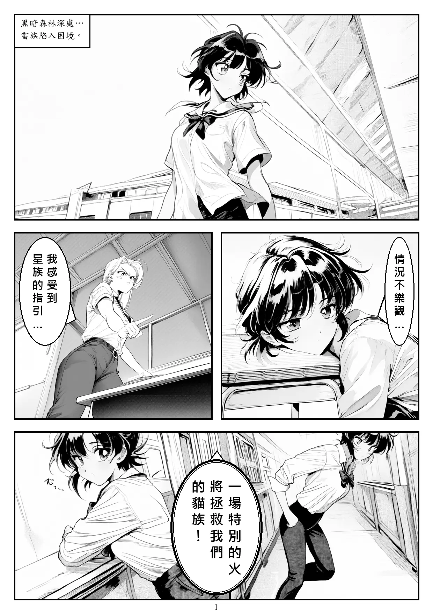

 貓戰士英文版 ● 連載中 1 話 第 1 話 The ThunderClan, a group of wild cats, faces trouble, and their medicine cat, Spottedleaf, receives a prophecy of a special fire that will save them. Meanwhile, a curious pet cat named Rusty longs for the wild and defies his friend Smudge's warnings to venture into the forest, where he encounters a wild cat named Graypaw.
 貓戰士 ● 連載中 1 話 第 1 話 雷族面臨困境，醫藥貓斑葉從星族獲得預言，一場「火」將拯救貓族。與此同時，家貓火星渴望野外生活，不顧朋友煙灰的警告，隻身闖入森林，卻遭遇一場突如其來的戰鬥。